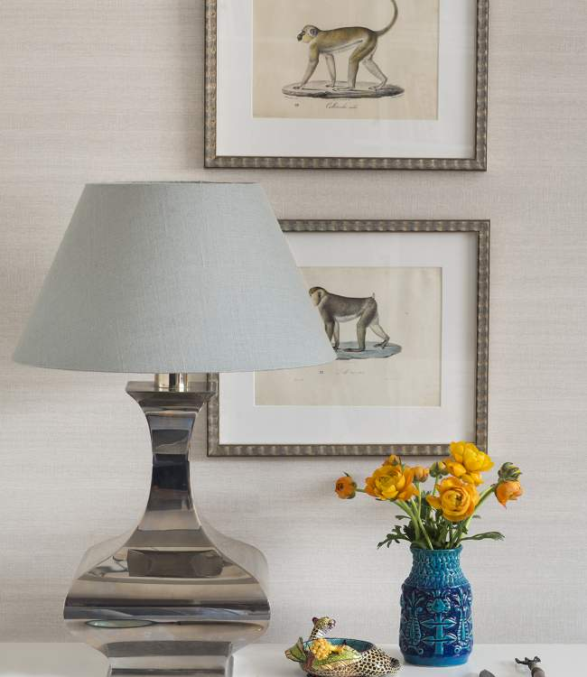

Portfolio Kungsholmen One-Bedroom

Kungsholmen One-Bedroom
The main focus of this small one bedroom apartment was to cleverly add storage and make the most of every square meter available. A soft textile wallpaper in the hall and living room added a warm backdrop to splashes of color and different patterns making it bright and cheerful.
The tiny bedroom was equipped with a sliding door to save space, and a large bookcase in the living room fit all the interesting collectibles from travels over the years.